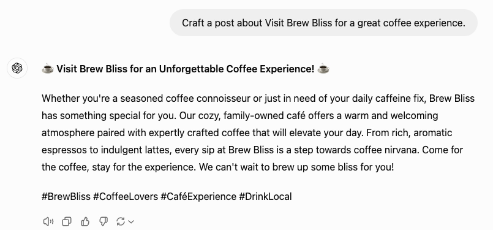
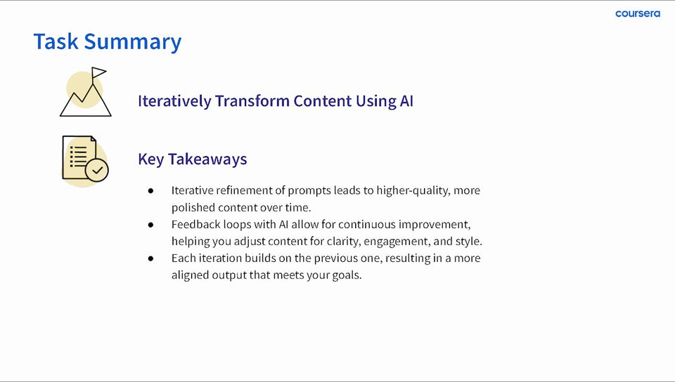

Coursera · Guided Project / AI EDUCATION · ENABLEMENT
Teach the habit behind a useful prompt.
A published beginner project uses a familiar content task to teach specificity, comparison, and iteration—giving learners a process they can practice.
8 min read

- The learner task
- Draft and revise a social post for the fictional Brew Bliss café.
- My contribution
- Guided Project instructor: learning sequence, prompt examples, demonstration, and original lesson production.
- The proof
- A published 2024 Coursera project and original recording excerpts showing a draft, revision instruction, and changed output.
THE CONTEXT
Make the next revision something a beginner can explain.
A beginner can copy a prompt and still be unsure why the answer changed. I used a familiar café-promotion task so the learner could look at a real draft, name what they wanted to change, and see how a more specific instruction affected the next response.
The product context and constraints
The original example begins with a short request for a Brew Bliss post. The next instruction asks for sensory detail, a friendly tone, and a more engaging invitation, alongside context about different coffee audiences. The visible result adds more scene-setting and more specific coffee descriptions.
That gives the lesson a concrete comparison. It also leaves room for judgment: the second answer is longer, and added detail still needs to match the brand and intended post. The point of the exercise is to inspect that tradeoff, then make another purposeful choice.
Constraints that shaped the work
- The project is designed for beginners and uses an ordinary content task rather than requiring technical prompt-engineering vocabulary.
- The recorded interface and examples are from 2024. Historical platform guidance in the lesson is not presented as current guidance here.
- The output comparison is a teaching demonstration. It does not establish that the added claims are factually verified, the post performed better, or learners transferred the skill to new work.
MY CONTRIBUTION & COLLABORATION
I created and taught the published Guided Project. The screenshots show my original teaching demonstration in ChatGPT, not a client campaign or a learner outcome study.
DECISION 01
Let the learner follow one real revision.
I start with a familiar café-post task, show the first draft, and make the next instruction visible. The learner can follow what changed before deciding whether the new draft serves the goal.
Initial draft · 03:35
Start with something to inspect.
The short request names the café and the purpose. The response supplies a warm invitation—and business details the prompt did not establish.

Original 2024 recording, Task 3. Prompt and initial draft visible at 03:35; Brew Bliss is a fictional practice brand.
Inspect this source image
Revision request · 03:35
Name the change you want.
The next instruction asks for sensory detail and a friendly, inviting tone. Those qualities give the learner something specific to look for in the next draft.

Original revision being prepared at 03:35. The full visible instruction, including its original wording and typos, is preserved.
Inspect this source imageChanged output · 04:00
More detail creates more to judge.
The revised draft adds a scene, coffee descriptions and audience cues. It is also longer. Specific claims about the café still need checking against the brief.

Original subsequent output at 04:00: headline and first two paragraphs. This is a changed demonstration draft, not a verified marketing result.
Inspect this source image
One sequence from my original Coursera lesson. The first request, revision being prepared, and subsequent output are recorded evidence; added café details are fictional practice material, not verified business facts.
Alternatives and constraints
- Alternatives
- Beginning with a fully specified prompt would hide the decisions that make the instruction useful. This example keeps the first request simple, then makes the revision visible.
- Constraints and tradeoffs
- The familiar subject lowers the barrier to practice, but it is still a fictional scenario. The model’s claims about the café need to be treated as generated draft material rather than verified business facts.
Evidence behind this account
At 03:35 in the original Task 3 recording, the initial request and its first generated post remain visible above the revision composer.
DECISION 02
Review the added detail before calling it better.
The revision produces more vivid language, but it also adds specific coffee claims and more text to edit. I want learners to compare the answer with the brief and the intended post, rather than reward detail just because it sounds polished.
Compare the requested changes with the recorded output
A visible request, followed by a visibly different draft
Can you make this more engaging and inviting? Include sensory details and a friendly tone.
| Requested change | What appears in the 04:00 output | What still needs judgment |
|---|---|---|
| Sensory details | The response describes the scent of freshly ground beans, velvety lattes, and bold espressos. | Do those descriptions match the fictional brief or a real business’s verified offer? |
| An engaging, friendly invitation | The response addresses the reader directly and opens with “Step into Brew Bliss.” | Is the voice appropriate for the brand and audience? |
| Context about coffee audiences | The response speaks to gourmet preferences and sweet seasonal-drink preferences. | This context came from a demonstration brainstorm, not audience research. |
| A stronger post | The resulting draft is much longer than the starting version. | Does the added detail serve the post, or should the next revision reduce it? |
The instruction excerpt is exact; the screenshot preserves the full visible instruction, including its original typos. The output crop contains the heading and first two paragraphs, not the complete answer.
Alternatives and constraints
- Alternatives
- A request to simply make the draft better leaves the desired change open. The visible revision makes several of those preferences explicit and adds coffee-audience context.
- Constraints and tradeoffs
- Adding context changes both the description and the amount of text. The second output gives the learner more specific material, but it also creates more detail to verify and a longer draft to edit for the intended platform.
Evidence behind this account
The revision instruction is visible in the composer at 03:35. By 04:00, the recording shows the subsequent output, headed “Step into Brew Bliss: Where Every Sip Tells a Story.” The stills document a teaching sequence, not a controlled comparison holding every other variable constant.
DECISION 03
Connect the example to a repeatable review habit.
The Task 3 summary returns to drafting, reviewing, and refining against a goal. The broader project carries the work into a weekly content calendar, so prompting connects to an organized deliverable.

Read my proposed transfer-assessment questions
Questions I would use to test transfer
- What is this piece of content supposed to help the audience do?
- Which detail in the output is unsupported or does not fit the brief?
- What one instruction would you change, and what difference do you expect?
- How will you decide whether the next draft is useful enough for the intended post?
Proposed transfer assessment based on the recorded draft–review–revise activity. These questions are a portfolio retrospective, not a reported learner study.
The published project has 4,700+ enrollments as of September 2026. Enrollment is not completion or demonstrated skill improvement.
Alternatives and constraints
- Alternatives
- A collection of finished example prompts would give learners something to copy. The guided activity instead makes the initial draft, revision request, and changed output available to inspect.
- Constraints and tradeoffs
- Following a demonstrated sequence is easier than applying it independently. A completed lesson or enrollment count cannot tell us whether a learner can choose useful constraints for a new task.
Evidence behind this account
The original Task 3 summary and official project curriculum support the activity and calendar connection. The prompts below are a retrospective review checklist drawn from this example, not a claim that these exact assessment questions were used in the course.
How the work developed
- 2024
Published Guided Project
I created and taught ChatGPT 4o for Beginners: Create Social Media Content. The retained Task 3 recording contains the draft-and-revision demonstration shown here.
- September 2026
Public course checkpoint
The official course page identifies me as the instructor and reports more than 4,700 enrollments.
OUTCOME & REFLECTION
A public learning experience people can work through.
The guided project is published on Coursera with my instructor attribution and more than 4,700 enrollments as of September 2026. It gives beginners a hands-on sequence for developing and revising AI-assisted content.
A stronger lesson makes the review criteria visible too.
The recording shows that changing an instruction changes the draft. It also shows a risk: asking for richer language introduced concrete details such as single-origin beans and a caramel-infused pumpkin-spice drink that the visible revision request did not establish. Looking back, I would make the acceptance criteria clearer before the next revision: facts supported by the brief, appropriate length, intended audience, and a specific action. Then I would give learners a different business and ask them to diagnose the first answer before seeing a worked example. Their explanation of the next change would tell me more about transfer than a polished final post alone.
The next question I would test
Assess a new content task with a short explanation of the weakness, the chosen prompt change, and the reason the learner accepts or revises the next output.
Official Coursera project page and original 2024 lesson recordings. Stills preserve the historical interface and course credit; they are excerpts of my teaching material. Enrollment is not completion or a measure of learner improvement.
KEEP EXPLORING